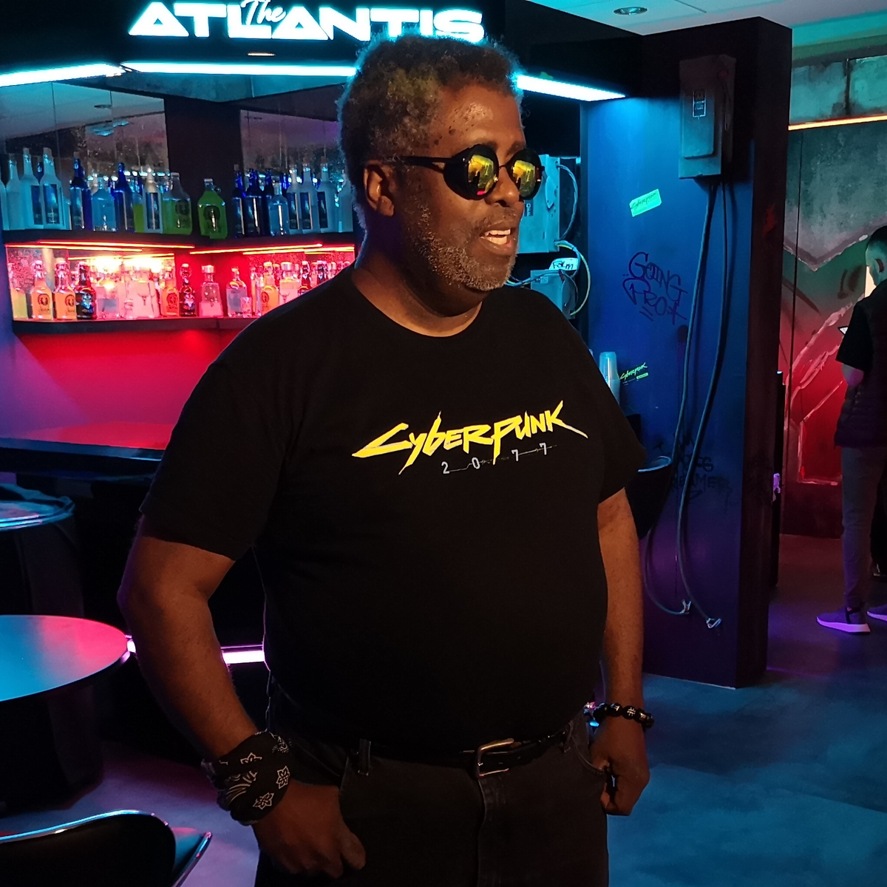
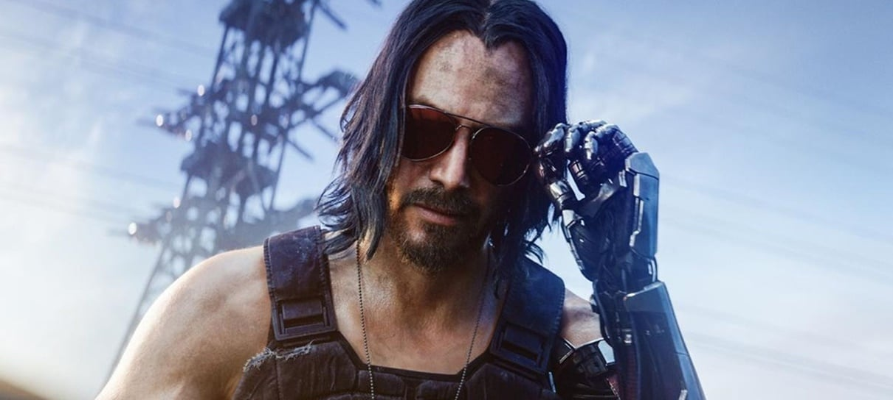

Cyberpunk foi criador por Michael "Mike" Pondsmith em 1988 como o RPG de mesa "Cyberpunk 2020", o RPG se passa no ano de 2020 no futuro distópico criador por Mike, durante uma guerra entre duas grandes corporações, a Arasaka uma empresa japonesa e a Militech, em Night City, cidade controlada pelas grandes empresas situada em South California, um dos estados da América pós crise de Cyberpunk.
Mike Pondsmith usou São Paulo, Rio de Janeiro, Morro Bay e grandes metróploes japonesas como inspiração para a cidade de Night City, e a estética Cyberpunk foi inspirada em filmes e obras como Blade Runner (1995), Akira de (1988), Ghost In The Shell (1955), Neuromancer (1991).

Night city foi fundada em 1992 por Richard Night, com o objetivo de criar uma cidade livre da influência do governo dos Novos Estados Unidos da América, Night City foi fundada como Coronado City, em 1998 Richard Night foi assassinado por criminosos e a cidade foi renomeada em sua homenagem.
Após sua morte a cidade ficou dominada pela máfia e organizações criminosas, até que em 2009 a Arasaka, uma empresa japonesa fundada por Saburo Arasaka, levou a empresa até a cidade e eliminou a maior
parte da máfia, o que fez outras empresas se mudarem para a cidade.
Durante as guerras corporativas a Arasaka de Night City foi alvo de ataques da Militech, empresa dos NEUA (Novos Estados Unidos da América), o primeiro foi uma invasão liderada por Jhonny Silverhand em 2013, em 2023 duas equipes invadiram a torre da Arasaka, uma equipe liderada por Morgan Blackhand tinha o objetivo de detonar uma bomba nuclear na torre, e a outra equipe, liderada por Silverhand, instalou o vírus libertador no banco de dados da Arasaka.
